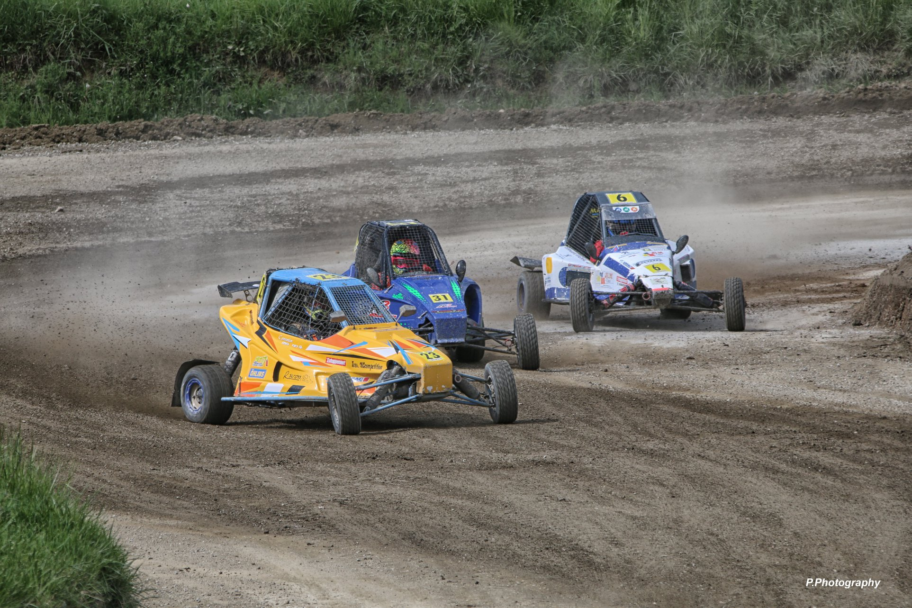

Ci-dessous, découvrez 2 replays de vidéos diffusées en live sur la chaine Youtube OFAC TV
Mauron 2022 - 2ème manche qualificative - Cliquez ici
Saint Junien 2022 - 2ème manche qualificative - Cliquez ici
Cliquez ici pour découvrir le dossier 2023